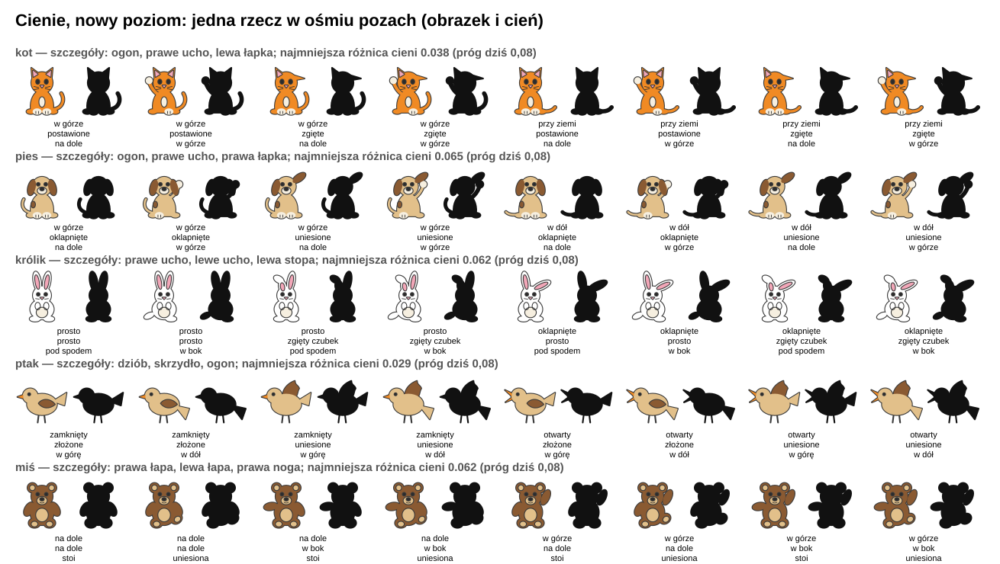
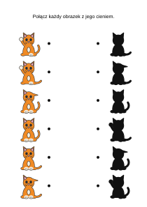
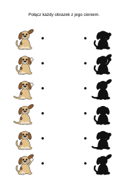
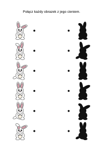
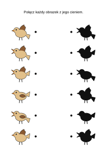
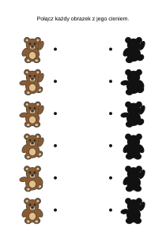

kot: najmniejsza różnica 0.038 (w górze, postawione, w górze | w górze, zgięte, w górze); jeden szczegół od pozy bazowej: ogon 0.134, prawe ucho 0.042, lewa łapka 0.102 pies: najmniejsza różnica 0.065 (w górze, oklapnięte, na dole | w górze, oklapnięte, w górze); jeden szczegół od pozy bazowej: ogon 0.109, prawe ucho 0.119, prawa łapka 0.065 królik: najmniejsza różnica 0.062 (prosto, prosto, w bok | prosto, zgięty czubek, w bok); jeden szczegół od pozy bazowej: prawe ucho 0.183, lewe ucho 0.063, lewa stopa 0.089 ptak: najmniejsza różnica 0.029 (zamknięty, uniesione, w dół | otwarty, uniesione, w dół); jeden szczegół od pozy bazowej: dziób 0.034, skrzydło 0.162, ogon 0.186 miś: najmniejsza różnica 0.062 (w górze, na dole, uniesiona | w górze, w bok, uniesiona); jeden szczegół od pozy bazowej: prawa łapa 0.131, lewa łapa 0.064, prawa noga 0.064





